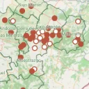

Work
Some of the projects done with schools, organisations and businesses.
-
ERA · CEIP de Olba
How do you take the classroom to the garden?
Training for the teachers of CEIP de Olba and a free website of school garden activities, linked to the Aragon curriculum.
Environmental education, training, web development
-

Siembra Teruel · CITA
How do you keep track of a seed campaign?
A private web dashboard for CITA to follow the tomato varieties in its Seed Bank, the growers who sponsor them and the lab records.
Web development, data, maps
-
El otro lado · Proyecto Caravana
How do you sync a scene for two audiences?
The electronics of six miniature theatres in a show about school bullying: Arduino and custom-made boards.
Electronics, Arduino, theatre